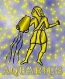

<html>
<head>
<title>Vízöntö</title>
<script type="text/javascript" src="js/public.js"></script>
<script type="text/javascript" src="js/subpage.js"></script>
<script language="JavaScript1.1">
IMG_PICT="images/inte/horo/" 
horopict = ""
var subpage = new Array(
horopict+"Szinte mindenben kiemelkednek környezetükbõl, magasabb rendûek. Nagy forradalmárok, újítók, feltalálók látnokok, lélekbúvárok. A Szaturnusztól a komolyságot, a mélyenszántó gondolatokat, az Uránusztól a fogékonyságot kapták. Tudásvágyuk határtalan, majdnem minden témában jártasak. Nemcsak kívülállóként szemlélik a világot, hanem maguk is tele vannak új, eredeti, olykor kissé bizarr ötletekkel. Nagyon könnyû együtt élni, dolgozni a Vízöntõkkel. Születésüktõl fogva türelmesek, tapintatosak, megbízhatóak, s bár óriási bennük a becsvágy, soha nem képesek arra, hogy másokat eltapossanak. Igazságszeretetük és szociális érzékük fejlett, emberismeretük pedig kitûnõ, mielõtt megszólalnánk, ok már tudják mit akarunk mondani. Akivel nem találják meg a szellemi összhangot, azt inkább elkerülik. Ezt sokan félreértik, nagyképûnek, gõgõsnek mondják. Szangvinikus alkatúak, könnyen méregbe jönnek, de hamar lehiggadnak, bosszúvágynak a nyoma se marad bennük. Ugyanígy hiányzik belõlük az önzés, s sosem hajlik maguk felé a kezük. A szerelemben és a házasságban is másképp viselkednek a Vízöntõk, hajlamosak arra, hogy beleszeressenek egy karcsú derékba, vagy egy mosolyba, de ahhoz, hogy komoly kapcsolatra lépjenek több kell, szellemileg és lelkileg is meg kell felelni. Lángoló szerelemnél többre becsülik a párkapcsolatot, a mély és õszinte barátságot. Ha választottjuk nem tud eleget tenni ezeknek, hamar ráunnak és odébbállnak. ",
horopict+"Mindent összevetve a szerelem és a sex a Vízöntõknek csak szórakozás. Levegõ jegy, pozitív töltés, szilárd. Szimbóluma az ember vizeskorsóval. Régi ábrázolási módja: ember helyett angyal öntötte a vizet, jelképezve ezzel, hogy az \"élet vizét\" az érzékelhetõn, megismerhetõn túli égi forrásból meríti, s szabadon hinti szét, érdemre való tekintet nélkül az emberiség javára. Az õsi keleti népeknél a víz a lelket jelentette: a lelket, mely az értelmen, s az ésszerûségen túlnézve intuíciójával, inspirációktól hajtva meglátja a lényeget. A kiömlött víz megkülönböztetés nélkül áramlik mindenkihez s ez azt jelenti, hogy az egész emberiség iránt érdeklõdik. Jele: az egymás fölött elhelyezkedõ két hullámvonal. Régészeti kutatások azt tárták fel, hogy a hullámvonal a régi korokban a vizet jelképezte, s úgy gondolták, a jel ezt a szimbólumot fedi. Az idõk folyamán ez az elképzelés módosult, s a két hullámvonalat a bölcsességet jelképezõ kígyókkal hozták analógiába. Uralkodó bolygója a Szaturnusz, a karma bolygója. A karma jelentése: minden tettnek megvan a gyümölcse. A Szaturnusz jelképezi a korlátozást, a merevítést és adja a komoly, mély gondolatokat a valódi elmélyedés képességét. Mindez a Vízöntõ ember személyiségében körültekintésben, felelõsségérzetben, kötelességtudatban mutatkozik meg. Az Uránusz az újító, a reformátor, a modern elõrehaladás serkentõje, a szabadság és függetlenség jelképe. ",
horopict+"Az uránuszi emberrõl elmondható, hogy ötletszerû és ennélfogva kiszámíthatatlan. A számára különleges dolgokat szereti. Érdeklik a modern technika vívmányai. A forradalmár Uránusz uralma küzdelmet hoz a személyiségébe. Az uránuszi függetlenség, szabadságvágy és a hagyománytisztelet hiánya ellentétesnek tûnik a szaturnuszi óvatossággal és higgadtsággal, ha azonban közelebbrõl megvizsgáljuk a dolgot nem éppen a forradalmár az, aki rendíthetetlenül és mereven ragaszkodik elképzeléseihez? A Vízöntõ pozitív töltésû, szilárd minõségû levegõjegy. A szilárd minõség határozott jellemet jelent, aki ragaszkodik ahhoz, hogy céljait a saját maga elképzelte módon valósítsa meg, s ettõl nehéz eltéríteni. Kitartóan véghezviszi amit elhatározott, vagy elvállalt. Szívósan, állhatatosan küzd az eredményért, s azt vasmarokkal meg is õrzi. A levegõ - elem intellektuális, szellemi és mûvészi érdeklõdést és tehetséget ad, könnyû felfogást, változatosság iránti szeretetet, sokoldalúságot és minden újnak a szeretetét. A két minõség látszólag ugyan ellentétes, de valójában kiegészítik egymást, mert a szilárd minõség a szétforgácsolódást megakasztja. A levegõre jellemzõ közlékenység a gondolatok, információk szállításában, s az eszmék, emberkapcsolatok közti széthintésében mutatkozik meg. Talán két kép: a szfinx és az udvari bolond különösen megvilágítja a mélyebb lényét. ",
horopict+"A szfinx messze-tekintõ, mindenen keresztülnézõ mosolyát látjuk tükrözõdni a Vízöntõ-ember arcán, jobban mondva azon a maszkon, amit hord. Nem árulja el mit érez, mit gondol és mit akar. Az udvari bolond szerep megengedi, hogy a legmélyebb igazságokat, a legragyogóbb szellemességeket, a legszélesebb megjegyzéseket dobhassa oda a hatalom birtokosának. Ezt teszi a Vízöntõ-ember is mikor a szfinx-álarc mögül a szavak fegyverét használja az érinthetetlen pozíciókban ülõkkel szemben. Kivétel nélkül minden Vízöntõ-szülöttben benne rejlik az isteni szikra, a lángész valamilyen adottsága. Magas szellemiségû reformer, aki maga is szül új, eredeti értékes ideákat és emellett érdekli minden új gondolat, eszme, mely telve van lehetõségekkel. Sokszor annyira ragaszkodik saját elképzeléseihez, elgondolásaihoz, ötleteihez, hogy nehezére esik bármi másra áthangolódnia, vagy esetleg belátnia, hogy más szempontok is vannak az övén kívül. A hierarchiát nem szereti, a korlátokat nem viseli, a gátakat lerombolja. A saját elvárásainak szeret eleget tenni. Szellemi, értelmi adottságaival a gondolat területén is szabad teret követel. Személyes szabadságához ragaszkodik. Hûséges azokhoz, akikkel baráti kapcsolatra lép, a személyes szabadság tiszteletben tartásával. ",
horopict+"A reálisnak nevezett korlátozott maggondolások nem állják útját, az érzékfeletti világban találja meg az annyira keresett, eszményi beteljesülést, nem ritka a plátói szerelem sem kapcsolatában, lehet lírai, vagy poétikus szeretõ. Szereti a mûvészetet, a tudományt. Minden érdekli, ami szokatlan. Él benne a megismerési vágy, hogy behatoljon a természet titkaiba. Szívesen belemélyed okkult kérdésekbe. Idealista, lelkesültségre hajló képzelete határtalan magasságokba ragadja és ez valódi alkotómûvészetre képesíti. A magasabb rendû típus becsületes, hûséges, türelmes, tapintatos, nemes-lelkû, megbízható, természetes becsvágyú, jó diplomata. Nagy igazságérzete jó békítõvé teszi. Akarata erõs, állhatatos, akadályt nem ismerõ. Legjellegzetesebb tulajdonsága az emberszeretet és a szociális érzék. Nagyon finom érzésû, eszmevilágában eltér a mindennapitól, ezért az emberek csak ritkán képesek megérteni. Emberismerete szinte látnoki, megérzi más emberek terveit, szándékait. Szeretetre méltó és társaságkedvelõ annak ellenére, hogy Szaturnusz-hatásként néha igényli az elvonultságot, mikor elmélyedhet gondolataiban. Mivel a kivárás embere, szándékait nem árulja el, s hogy ez sikerüljön neki, álarcot tesz fel. Könnyen felindul, de hamar meg is bocsát és visszatér víg kedélye. Kedélyállapot-hullámzása a felhõkben járó idealizmus és a lehangoltság között gyakori. ",
horopict+"Az Uránusz minden szülöttjét többé-kevésbé különcködõvé teszi, ezért fellépésében sokszor mutatkozik meg valami különös kiszámíthatatlanság. Életében az Uránusz gyakran idéz elõ hirtelen változásokat, sorsfordulókat. Kitûnõ filozófus válhat belõle, de bölcsessége mellett egy-két bizarr gondolat is kiütközhet. Nem tiszteli a szokásokat, hagyományokat, s ne próbálják ilyenre kényszeríteni. Annak, aki megnyerte szívét õszinte barátjává válik. Bohém és intellektuális. A Vízöntõ-ember nehezen viseli a kötöttségeket, szeret jönni-menni szabadon. Kapcsolataiban szélsõséges. A társadalmi szokások nem olyan lényegesek számára. Mindig tud új színt vinni a kapcsolatba, s ez egyúttal mélyen gyökeredzõ igény is nála. Az uránuszi ötletszerûség próbára teheti társa toleranciáját, ugyanis könnyen felrúg programokat. Szerelemben a maximumot várja el és azt is igyekszik nyújtani. Szereti az izgalmas helyzeteket. Ha a partner nem figyel rá, vagy túl sok az elvárás, akkor elmegy. Mindig igényli a különlegességet a partnerkapcsolatban. Partnere lelkületét, jellemét kutatja, mert állandóan új és új tulajdonságokat akar felfedezni. Szerelme esztétikai alappal bíró és szellemi. A lelki kötõdést és elvont szerelmet többre tarja a valósaknál. A sex nem elsõdleges szempont számára. A tiszta Vízöntõ a szerelemben is újító forradalmár, mint élete összes megnyilvánulásában. ",
horopict+"Ki nem állhatja a mindennapost, a közönségest, a kitaposott, szokásos utakat. Eszményi lelki társ. A szerelemben és házasságban is fontos számára a barátság. Mélyen tud szeretni és a fix jegyek hûsége mutatkozik meg kapcsolatában. Jó esze van a tanuláshoz és gyorsan keletkezõ zseniális ötletei ahhoz, hogy jó mûveltségét ésszerûen felhasználja. Képes egy problémát új megvilágításban látni. A fényképezés, a különleges, szokatlan tárgyak tanulmányozása pl. archeológia, asztrológia kedvelt tevékenységei közé tartoznak. Klubok, társaságok tagsága jobban megfelel egyéniségének, mint a nagyon szoros személyes kapcsolatok. Uránuszi oldal lázadóvá teszi az egyént, végletes eredetisége különcködésnek, szertelenkedésnek hat. A szaturnuszi oldal depresszióban és elszigetelõdésben nyilvánulhat meg, mivel csalódások érik, amikor céljait nem tudja elérni. Természetes ösztöneinek gátlását okozza, ha túlságosan konvencionális, unalmas, konzervatív életet kell élnie. Ilyenkor elégedetlenné, zúgolódóvá válhat. ",
horopict+"<b>Bolygója:</b> a Szaturnusz és Uránusz<br>"
+"<b>Eleme:</b> a föld<br>"
+"<b>Természete:</b> kardinális<br>"
+"<b>Erényei:</b> rugalmas, könnyed, nem felületes, megbízható, emberszeretõ, önzetlen, nyílt, becsületes<br>"
+"<b>Hibái:</b> idealista, különc, exhibicionista<br>"
+"<b>Testrésze:</b> a térd<br>"
+"<b>Betegségre való hajlam:</b> csontrendszer és izületi betegségek, idegfájdalmak, érgörcsök, vérkeringési zavarok, vérnyomásproblémák<br>"
+"<b>Védõkövek:</b> zafír, akvamarin<br>"
+"<b>Szerencsekövek:</b> türkiz, sólyomszem, januári: hiacin, gránát, február: ametiszt"
);
</script>
</head>
<BODY background="images/public/background/bg1.jpg">
<script language="JavaScript1.1">
	firstdraw("VÍZÖNZTÖ január 20. - február 19.");
</script>
</body>
</html>